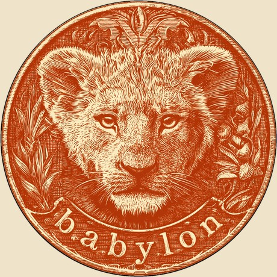
Babylon
the cultural investor on a technical cap table.
TLDR: capital is becoming a commodity, and you win a seat on the best frontier cap tables by being memorable and doing the one thing for a founder that the big platforms structurally can't. For the companies I back, that thing is the cultural layer. I'm the only investor in the room whose entire job is turning hard technology into culture - the narrative, the founder's positioning, the public imagination, the hiring magnetism, the fundraising story, the creators who carry it. I work as an artisan: small checks, deep work, in person, in San Francisco. The fund is $15M, 37 companies, ~2% entry ownership, no reserves.
You've watched some of this already. Intuition - my first fund, the MVP - is ~$7.5M across ~40 companies and 76 LPs, and the second half of that book is already marking up faster than the first: Eridale ~6.6x, Minerva ~4.6x, Eigen ~2.0x, with Founders Fund, OpenAI, Sequoia, Benchmark and General Catalyst pricing my early calls a few months after I made them. Babylon is what happens when I take everything that book taught me and build the only fund I want to run - the right thesis, in the right city, at the right size, with the right construction. Everything below is the why.
AI has started a crisis of meaning
With AGI on the horizon, the ground under everyone is moving at once, and it lands as a crisis of meaning that hits three groups in three different ways.
Talent, existential. The top 0.1% - the people who can build almost anything - suddenly have infinite optionality, and so they no longer know what's worth doing. That's classic existentialism. They find peace the only ways they can: building their own company, or joining Anthropic and OpenAI, en masse. Pouring a life into someone else's startup now takes a mission worth bleeding for, and almost nothing being built today clears that bar.
Founders, absurd. Building is a commodity now - dozens of competitors appear the week they start. Worse, the labs are chasing them: every model release kills hundreds of startups or forces a pivot, and the work restarts from zero. Il faut imaginer les founders heureux.
The public, nihilistic. The other 99.9% hold none of the optionality and all of the fear. They see replacement coming, with no place kept for them, so they answer the only way they can: revolt - against the labs, the data centers, the whole project.
Meaning becomes the scarce resource. Culture is how we manufacture meaning, so culture now sits upstream of technology - a reversal of the last 50 years, when we built because we could and culture caught up afterward. And that nihilistic public is online, organized, and increasingly able to veto what gets built: data centers, nuclear, and gene editing have all been stalled by it. Culture is fighting back.
The cure: build hard things, tell great stories
The cure has two moves, and the best founders are already making both.
Build hard things - out of software, into atoms and cells. For 20 years the frontier was software; then the floor dropped out. Once a model can write the code, building software stops being hard, and what isn't hard isn't defensible. The most rebellious builders - infinite options in front of them, no patience for anything a weekend can clone - do what they always do when a frontier commoditizes: they go hunting for friction, migrating to where building is still brutally hard and atoms and cells fight back. Hardware and bio, enabled by AI but not threatened by it, too physical for a model release to erase. A mission that hard is also what wins the existential 0.1% back from the labs. But advancing there is mostly defensive: you move fast enough that the next model or competitor can't erase you. That keeps you alive; winning gets decided elsewhere.
Tell great stories - accumulate Narrative Capital. The further from software you push, the longer every feedback loop runs: you can't iterate a nuclear reactor or an artificial womb with customers, so you have to win belief long before proof arrives. Four groups gate that belief, and almost no one underwrites them: the talent who joins, the capital that funds, the regulators who permit, and the public that accepts. With talent existential and the public nihilistic, that belief has never mattered more, and on frontier companies, the cultural climb increasingly decides everything.
Winning those 4 groups is a narrative problem before it's a technical one, and the asset that does the work has a name: Narrative Capital - the belief that carries a company until proof catches up, a new asset class that compounds the way financial, human, and social capital do.
Great storytelling now matters (almost) as much as great engineering.
The cultural seat at the cap table
Once you accept that storytelling now carries nearly as much weight as engineering, the question for a fund gets simple: on a technical cap table, who owns the story? Almost no one. A lead carries everything that makes a company - hiring, GTM, governance, the grind, and earns every point of the 10–15% they take for it. But each of those 4 groups is a narrative problem, and the seat responsible for them sits empty. That seat is mine. I'm the cultural investor on a technical cap table: I run the cultural infrastructure across a founder's whole journey - the founding story, the talent magnetism, the fundraising arc, the regulatory permission, the public imagination - built from day one with the same intention as the product. A narrative operating system. It's the only thing I do, and the only thing I want to be remembered for - almost as a meme.
And almost no one else can sit in this seat, because I've spent 15 years at the intersection between engineers and storytellers - on both sides of it - with one obsession running through all of it: helping people scale without permission, whether that's musicians past the labels, creators past the networks, or founders past the gatekeepers.
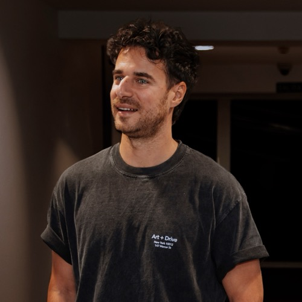
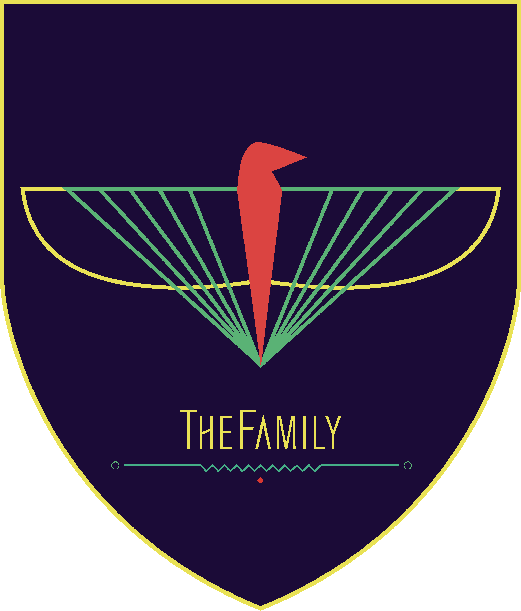

So the reason I can hold the cultural seat is simple, and hard to copy: I'm genuinely a peer in both rooms. A peer to founders, because I've been one and have spent 15 years in the trenches with them. A peer to creators, because I've been one too - a Substacker myself, inside that world the whole time. Almost no one comes from the creator world and credibly points it at the frontier; I've spent years building trust across that exact intersection, and it's why I'm close to alone in it. The clearest tell: I'm one of the only venture people speaking at Open Sauce, the leading science-creator conference, this July - the rare investor on a stage full of creators.
Ten months ago I left Paris - the most cultural city in the world - for San Francisco, the most technical, and started writing about the dance between the two: how technology and culture take turns leading, and how, with AGI, culture is fighting back. One of those essays, "Culture fights back," did 500K impressions on X a few weeks ago, reposted by the likes of Sam Lessin (Slow), Garry Tan (Y Combinator), Akshay Kothari (Notion), Sriram Krishnan, and Taylor Lorenz - people who rarely agree on anything, all feeling the same shift.
It's also where I named the fund: if culture is moving upstream of technology, the firm worth building is the one that backs the founders who can carry both. I called it Babylon - the first ancient metropolis where culture and technology worked together at scale. Raising the massive Ziggurats meant nothing without writing the Epic of Gilgamesh to give human ambition meaning. Building the machine is no longer enough. You have to write the myth.
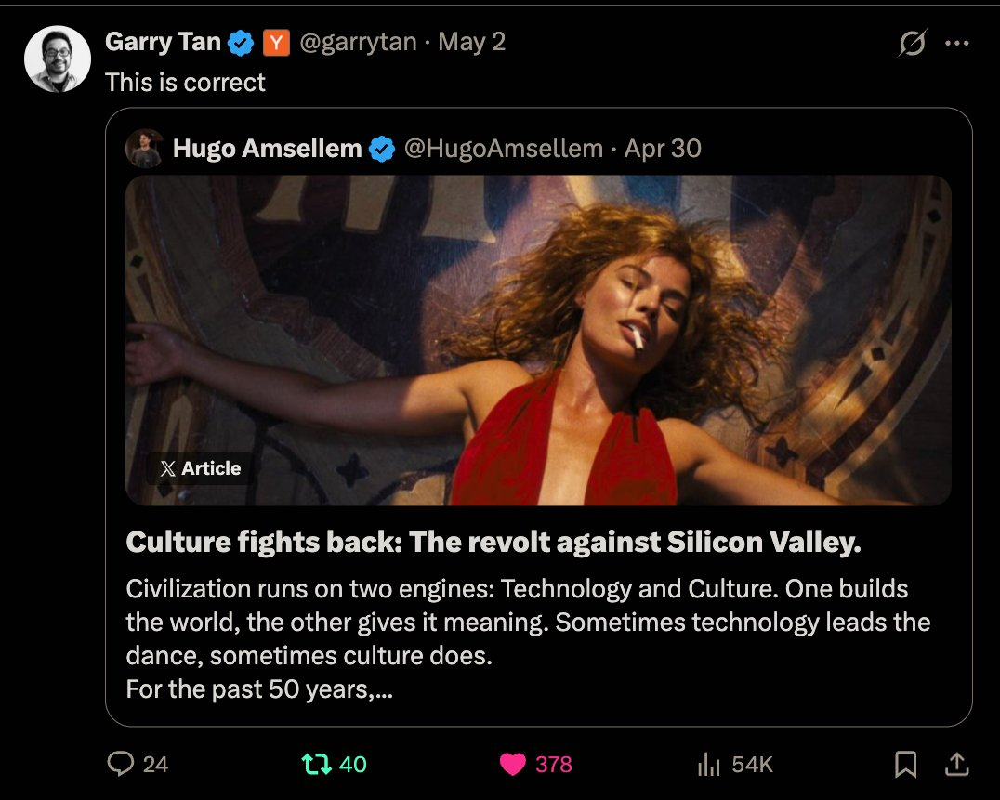
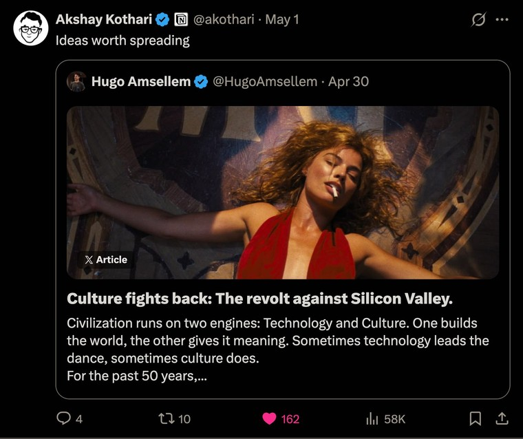
Babylon: the natural evolution of Intuition
Babylon is the natural evolution of a fund I've already been running. Intuition, my first fund, was the MVP, and the cleanest way to understand Babylon is to watch what changed inside it. I started it with a co-GP, investing in culture - consumer companies, and backed by culture: an LP base that is itself a roster of cultural firepower. Top funds (General Catalyst, Goodwater, Tiny VC), top founders (Deel, Vinted, Zalando, Jellysmack), top European GPs (Cherry, Credo, 20VC, Highland), and cultural figures (Raphaël Varane, Cyril Gane, Nas Daily, etc.).
Then, in April 2025, I went solo - no drama; we're still close and he's off building a great company - moved to San Francisco, and the best founders pulled me to the frontier of hardware, robotics, and biotech. I stopped investing in culture and started investing with it: a cultural layer on frontier companies who need narrative as much as capital - the cure applied. That switch - from investing in culture to investing with culture - splits the book cleanly in two: one portfolio built before June 2025, and one after. The second half is already marking up faster than the first, despite being a year younger.
45% marked up·72% US-based·24 months
From June 2025: 2.45x gross·1.40x priced-in
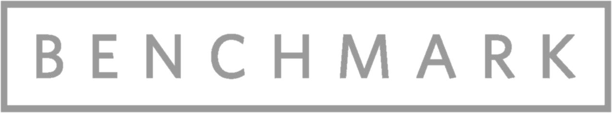
Here's the selected book, and the honest read behind the marks. Most are SAFE marks; Benchmark into Eigen and Sequoia into Delphi are real priced rounds. The TVPI is still young, but the two chapters already tell the story - the post-solo book is running 2.45x gross against the earlier 1.39x, and what matters most is who's setting the price. The best funds in the world keep repricing my earliest calls within months: Sequoia into Delphi, Benchmark into Eigen, Founders Fund and OpenAI into Eridale, General Catalyst into Minerva. Most of the post-solo book has only been in the ground about a year.
| Company | What it is | Marked up by | Mark |
|---|---|---|---|
| Eridale | autonomous kitchens for franchise-scale restaurants | Founders Fund, OpenAI | 6.6x |
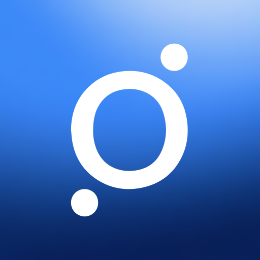 Orion | smart-cooling bed at half Eight Sleep's price | Mucker, Second Sight | 5.0x |
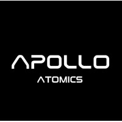 Apollo Atomics | compact nuclear reactors | FCVC | 4.8x |
| Minerva | humanoids for hazardous operations | General Catalyst | 4.6x |
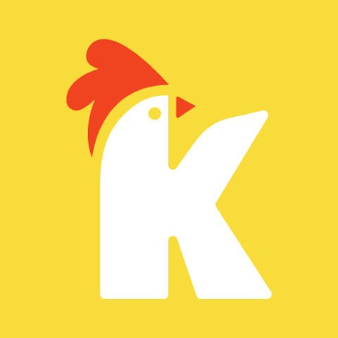 Klipy | rev-share API for GIFs, stickers & AI-memes | Google's AI fund | 3.3x |
| Deduction | AI-native personal CPA automating tax prep | Portage Ventures | 2.3x |
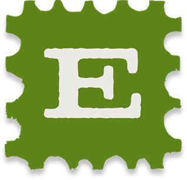 Eigen | multiplayer AI social protocol | Benchmark | 2.0x |
| Delphi | digital cloning platform for knowledge workers | Sequoia | 1.9x |
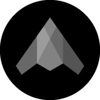 Phase Labs | focused-ultrasound device for tissue regeneration | Initialized, Long Journey | 1.7x |
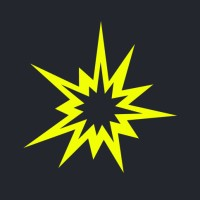 Sparkmate | modular electric steel mills | SNR, Afore | 1.7x |
Babylon is that second half - named correctly, and built from scratch to do only this. In spirit it's Fund I carried forward, with the learnings of the last few years built in and the edge already proven. Here's what it backs, and how I win it.
What Babylon backs
Part 1 gave me two axes: how hard the technology is to build, and how hard the culture is to win. I back the companies climbing both at once. The clearest way to see what that means is the book itself - every company below is one I've backed since going solo, plotted on those two axes, mapping exactly where Babylon plays.
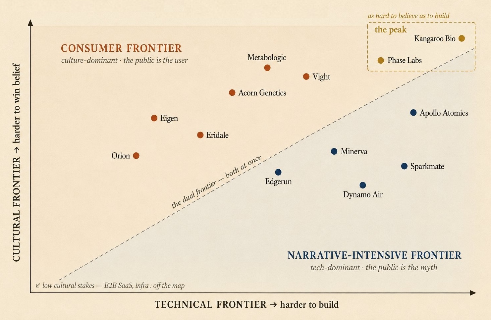
The line has 2 poles, and Babylon sits about 70% below it and 30% above.
Below the line is the narrative-intensive frontier - about 70% of the fund. The technology is the steeper climb, but belief still gates everything: the talent, the capital, the regulators, the myth. The public here is the audience. Minerva builds humanoids for hazardous operations; Dynamo Air, an autonomous heavy-lift chinook; Apollo Atomics, compact nuclear reactors; Sparkmate, modular electric steel mills; Edgerun, an exoskeleton for heavy loads. None of them sells to consumers, and every one needs a founding myth - Edgerun and Apollo most of all, because exoskeletons and nuclear are pure science fiction the moment the story is told right.
Above the line is the consumer frontier - the other 30%. The engineering is genuinely hard, and the culture is harder still, because here the public is the user, adopting or rejecting the thing out loud. Eigen put a multiplayer AI social protocol in front of people; Orion sells a smart-cooling bed at half Eight Sleep's price; Acorn Genetics is a pocket DNA sequencer; Metabologic is an enzyme that turns the sugar you eat into allulose in your gut; Vight is a personal 2-seat eVTOL; Eridale runs a restaurant from an autonomous kitchen. Every one is a real technical bet whose fate is decided by whether the public falls for it. I've written about the consumer frontier here.
At the top, where the two climbs meet at full intensity, are the companies as hard to make people believe as they are to build: Kangaroo Bio, artificial wombs from bioprinted endometrium, and Phase Labs, a focused-ultrasound device aimed at regenerating tissue, and, if it works, organs. These are the purest expression of the thesis, and the ones a cultural failure kills outright no matter how good the science.
It's one thesis, and it stretches - from hard consumer plays, through sci-fi bets, to frontier science - held by a single claim: in every one of these, narrative is what turns a hard technology into a category.
What I pass on follows from the same logic. B2B SaaS, B2B AI, and enterprise, where the value a small investor adds is customer intros and the narrative barely matters - a game I leave to others. AI infrastructure and wrappers with no cultural stakes. And anything not built for the US market. If culture won't be a core element of the business, I can't get into the best of the best, and I have no edge anyway - that's the whole bottom-left of the map.
Which leaves the obvious question: how does a cultural investor underwrite the frontier at all? It starts with a line I keep coming back to. "Deep tech" doesn't mean anything. Software was deep tech 20 years ago. Robotics was deep tech 5 years ago. Bio is deep tech right now.
When a space commoditizes, defensibility shifts from raw technical difficulty to IP, brand, and network effects - the same way it works in content or fashion. On these frontiers the science is largely settled; the hard part is engineering it into the real world under real constraints, and what compounds on top of that is belief.
So I don't need to be a deep-tech investor. I need to recognize the builder, and that's the one thing 15 years around founders has trained me to do on sight. I underwrite the founder, and then do the cultural work only I can do. Where I have to hold a real view on a niche, the move is sharp human taste plus AI to go down the rabbit hole and understand a new field fast - enough to have a point of view without being the smartest person in the room on the science.
Artisans vs. Industrialists
Knowing what to back is only half of it. The harder question - the one any LP should push on - is why a $200K check from a one-person fund earns a seat on these cap tables beside the platforms at all. It comes down to a structural shift in venture itself.
Sourcing is commoditizing - better tools, AI, and the velocity of communication are pushing toward a world where most investors see most deals, and the best founders are increasingly obvious to all of them, so you no longer win on sourcing, or on the size of your wire. You win on what you uniquely bring to a founder who can raise money anywhere. That is reshaping venture into a barbell. On one end, the multi-stage industrialists - a16z, General Catalyst - competing on brand, balance sheet, and scaled services, and now moving aggressively earlier, writing the pre-seed checks that used to be beneath them. On the other end, human, artisanal specialists doing irrational things that don't scale. The undifferentiated middle is what commoditized capital and AI arbitrage away first.
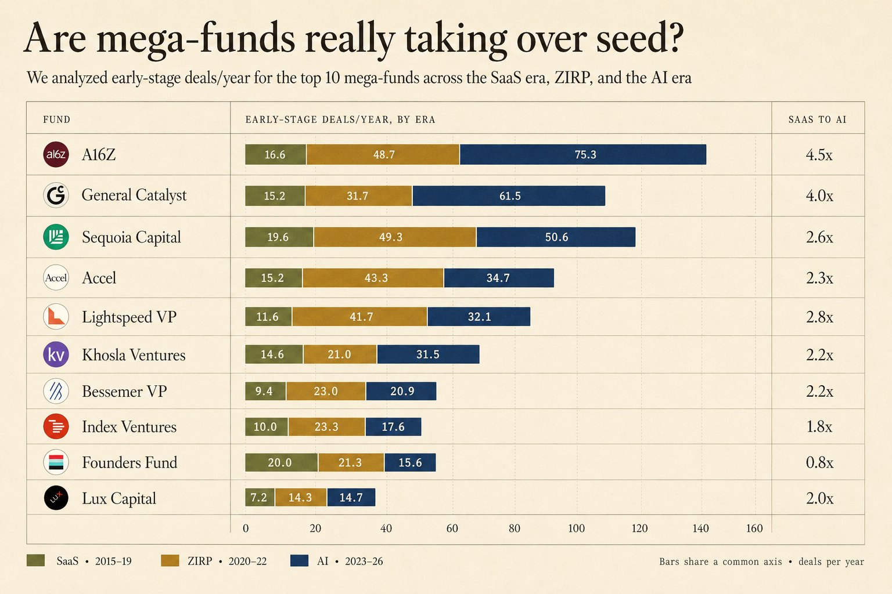
The industrialists win by industrializing, so the only way to win the other end is to be everything they can't: differentiated, memorable, and small. The artisan's real edge is an almost irrational love for one specific thing, a corner of the world they care about more than is reasonable. That obsession can't be commoditized, and it's what lets them see and back the pre-consensus bet while it's still illegible to anyone running a process. Being small is the other half of it: at this size a single pre-consensus winner moves the whole fund, so the concentrated, slightly irrational bet is also the rational construction. I'm not competing with the industrialists - I'm building the artisan pole, and I think it's the pole that wins pre-seed. Ryan Hoover put it cleanly: all that matters is winning - differentiation, human ability, being memorable, being at the center of everything, and building the right tools.
My edge inside that barbell is 2 things: being memorable, and being early. The first is a real, distinctive, unapologetic point of view about the world, and the cultural obsession under it - what makes me stand out, especially in San Francisco. The second is pre-consensus: I'm in before the round is hot, on something a little heretical - a pre-consensus founder whose background doesn't fit the Stanford pattern-match, a pre-consensus geography, or a pre-consensus topic most capital still finds illegible. The moment everyone agrees a founder will win - the moment the industrialists can see it - they don't need me, and I can't get meaningful ownership. Early is the only window where I can take a real stake at a price I can actually pay.
I get in cheap because I'm early. Turning that into a return is the cultural work that follows: I make the company legible to everyone who comes next - the talent, the press, the funds that lead the next round - manufacturing the consensus that wasn't there when I wrote the first check. A GP I respect framed the whole new game in a line: the job is to manufacture consensus. It's been my job all along, and the markups in the table earlier are that consensus arriving on schedule.
Eridale, Minerva, and Eigen were one of each, and they show what being early on purpose actually looks like.
Each one is the same move: early because I saw it, knew why, and earned the seat by showing up first and going to work. Geography is the pre-consensus bet I make most often.
Nearly half the book is European founders building in the US, and Europe is the geography where my edge runs deepest. Europeans create more US unicorns per capita than Americans do - France runs about 45x the native-born rate, and they tend to be technically brilliant and unusually loyal on talent, especially across robotics and bio. What they lack is the narrative muscle the US rewards, which is exactly my help and exactly my network. They're arriving in San Francisco in record numbers, the crackest 22-year-olds leaving the moment they can. I'd have caught them late from Paris; I catch them early here, while they still read as pre-consensus to American capital.
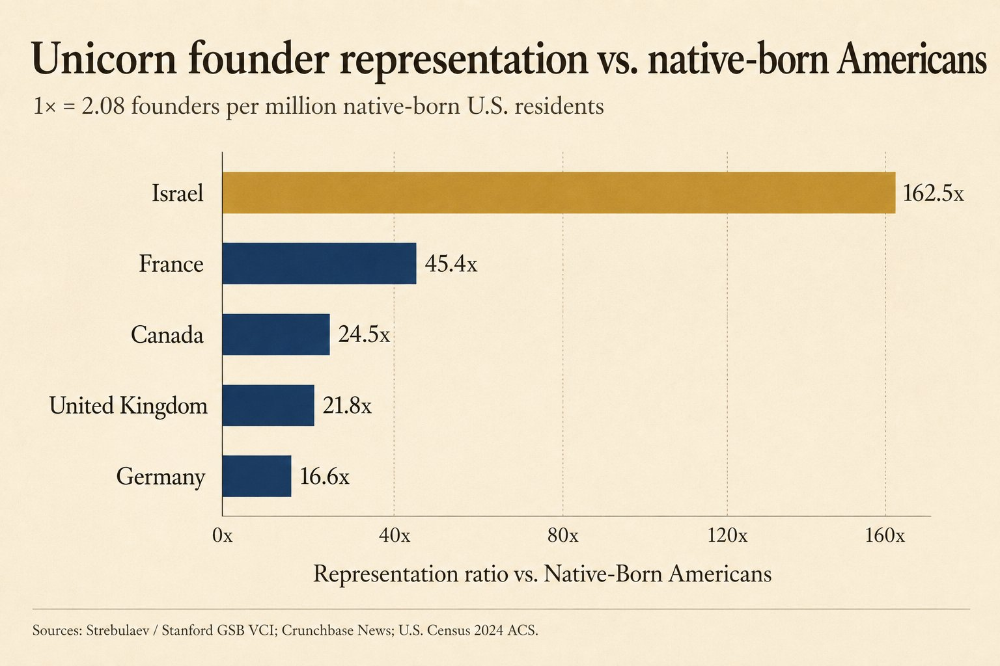
And the way I win those pre-consensus seats is by being an artisan, not an industrialist, so I'll be direct about how I build, because it's the most honest thing I can tell an LP. My parents make wine in the Rhône Valley. They're maybe a top-30 domaine in France, but tiny - 100,000 bottles, biodynamic, everything by hand, irrationally inefficient on purpose, built out of love for the craft. That's the fund I want to build. I'm not going to institutionalize it: no leading, no $50M Fund III and $100M Fund IV, no army of associates - a boutique, specialist vehicle that maybe reaches $25M at terminal size and keeps doing things for founders that bigger firms can't be bothered to do. The artisan's edge is the irrational extra mile, and the irrational extra mile is exactly what wins a seat the industrialist would never work hard enough to earn on a $200K check.
That craft is physical, and it's why I'm in San Francisco. New York shows up once a month, Europe once a quarter; I'm here every night - the in-person work is the part that doesn't scale, and the part I'd never give up.
Memorable and early is the structural claim - my right to the seat. But a seat only pays for what I do with it, and what I do is concrete: I manufacture the consensus I bet on. That work is a craft - the one thing I've built Babylon to be the best in the world at.
How I win: creators, community, and content
Three things win me the seat and the deals, and they compound into one loop: creators, community, and content. Creators are the narrative gang I deploy into a company once I'm on its cap table. Community is the trust infrastructure I own outright - the rooms I build and host myself, a craft I've run for a decade. Content is the engine that makes founders find me already pre-sorted. The content fills the rooms, the rooms deepen the relationships, and the work I do inside companies becomes the next content.
Creators
PR is dead - the public is unbullshittable, and legacy media has lost the trust that made it work, so founders go direct and assemble allies who have skin in the game, people who can't jump to the next outlet after a blowup because their audience is their accountability. Science YouTubers who make the work legible. Post-strike Hollywood writers who can build a founding myth that doesn't read like a deck. Substackers and new-media operators who run founder-led media independent of the press. I call it the narrative gang. My edge here is hard to copy: I've spent years in the creator world, and I sit on the board of Influencers.club, which holds the largest and best creator data in the world, so I can find the exact creators who move a given audience, reach them directly, and orchestrate a campaign across them. Identifying and mobilizing the right creators is the hardest part of narrative work, and I've turned it into infrastructure. I curate the gang and orchestrate it around each founder, at every stage of the journey:
Community
Community is my actual craft - I'm top 0.1% at it because I've done nothing else for a decade. At The Family I built and ran the largest events-and-dinner operation in Europe: 7 people on the ground putting on 25 events and 5 dinners a month across Paris, London, and Berlin. I know the craft and I know the ops, and I love both, which is why I own the full community stack, take no sponsors, and run every detail myself. It has never been more leverageable than now: trust is the scarce thing, and everything around it has been commoditized. So I host my own rooms rather than buying into other people's, and obsess over the physical details until the vibe can't be faked. Three monthly series do most of the work.
The Babylon Banquet is the heartbeat - a monthly dinner. I sit 25 to 30 of the best founders, investors, and creators in San Francisco at a single long table, and I mean a table I built. I worked out the exact width a shared table needs to feel intimate instead of corporate, had the wooden planks cut to spec at a specialist shop, and set them on trestles into one continuous banquet that seats 30 in my office: candles down the center, colorful plates shared family-style, no agenda. Fully loaded it runs me under $2,000 a night, all included, with almost no outside help, which is the entire point. The standard San Francisco dinner is underwritten by a bank or a law firm, and that sponsor quietly kills the intention and the vibe. Mine has no sponsor, no logos, no pitch. It's irrationally intentional, and that's exactly why the right people keep coming back, and why founders, talent, and creators connect here in a way no panel or demo day reproduces.
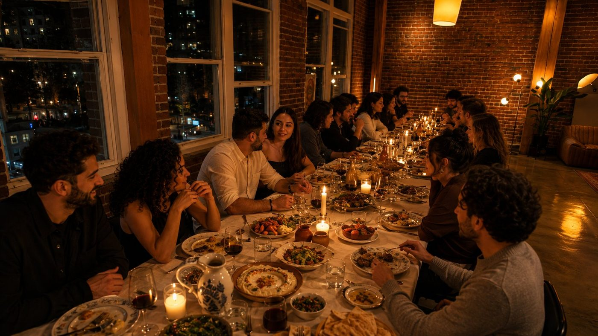
The Epic of… is the cultural frontier made public - a monthly on-stage interview series. I run it in a friend's event space in the Mission, so it costs almost nothing to put on, and each month I interview one Series B founder who is the purest expression of the dual frontier - as the author of a myth, not the subject of a fireside. The questions are about the narrative, the near-cultlike conviction, the founder's almost-religious belief in the work, the cultural intention behind it - in front of a curated crowd of 60 to 80 founders and top talent, recorded and published to X and YouTube afterward. The first guest is the founder of Ulysses, fresh off a Series A with a16z. And from July, every guest gets a custom-printed poster of their company, handed out from a merch stand built for the night - a level of taste San Francisco hasn't seen at an event like this.
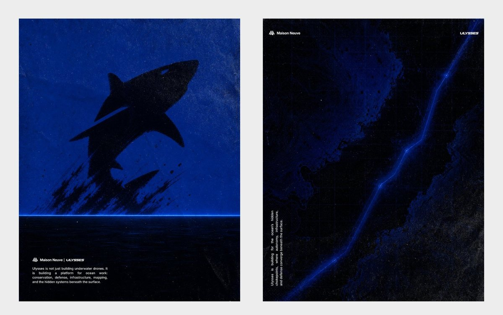
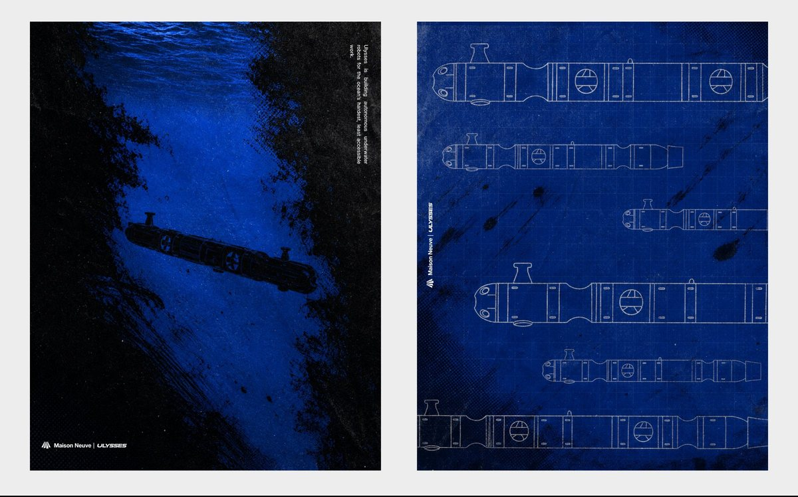
European Sundays is the landing pad - a curated monthly gathering for European founders in their first year in San Francisco. That first year is brutal, and my job is to make it short. I run this one as a gang - alongside excellent European solo GPs now based here, one each from Italy, Germany, and the UK, so that together we adopt the founders moving over, make the introductions, and turn a hard first year into a fast one. It's collaborative by design: more of us, pointed at the exact migration I have the deepest edge on.
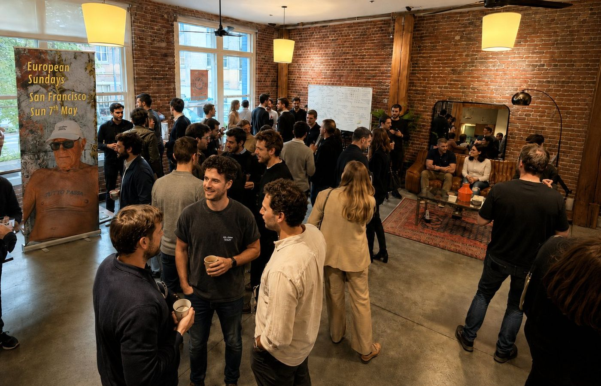
Content
For years I've published on internet culture, the creator economy, and now the frontier - most of it lives at internetculture.co, read by 7,000 subscribers on Substack and 20,000 followers on X: a highly curated audience of founders, creators, and investors. It reliably does 2 things: pulls deal flow toward me, and builds a public point of view that founders and co-investors reach for before they reach for most funds. A founder I've never met often already knows what I think before our first call, which means I tend to enter the relationship pre-trusted and pre-sorted. Content compounds while I sleep - it's the cheapest, most durable sourcing engine I have, and it has worked at every stage of my career.
Portfolio construction
Everything here is reverse-engineered from the edge, because fund size is your strategy has it backwards. The edge dictates the strategy; the size is the output. My edge is cultural, and priced honestly it's worth about 2% - not a lead's 10–15%. So I don't lead rounds; I take that 2%, early, in rounds priced between $5M and $30M. Buying that 2% across 37 companies is about $12M deployed; with 2% fees over the fund's 10 years on top, that's a $15M fund. Edge first, then ownership, then construction, then size.
And this is the right shape precisely because seed got expensive. The top of the market has tripled in a year, so the old emerging-manager playbook of only hunting $5M valuations is a value trap - cheap is often cheap for a reason.
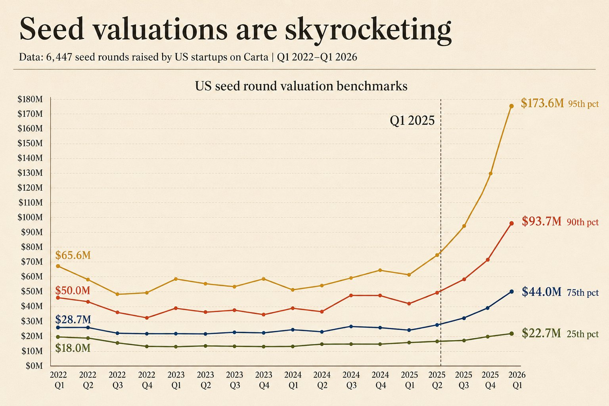
So I don't anchor to a low price; I anchor to ownership, and I flex on entry valuation when the company earns it. Being pre-consensus is what lets me hold 2% without paying the top-tier price - in before the round is hot, then doing the cultural work that prices it up. The construction follows from there.
| Companies | Valuation | Check | Allocation | Role |
|---|---|---|---|---|
| 25 | $5–15M | ~$200K | $5M | pre-consensus, where the cultural mispricing lives |
| 10 | $20–30M | ~$500K | $5M | less pre-consensus - a founder worth paying up for |
| 2 | $40–50M | ~$1M | $2M | rare - the least pre-consensus, priced higher still |
Ownership is the constraint; everything else bends around it. Two-thirds of the time I'm getting 2% at $5–15M, where the mispricing lives. The rest of the time the founder is less pre-consensus but too good to pass: the round is priced higher, so the same 2% simply costs more - about $500K in the $20–30M band, and up to ~$1M on the rare occasion a first round is priced higher still. I'm not doubling down or sizing into winners; the bigger checks are only ever what 2% costs at a higher entry.
No reserves is deliberate, and the math is on its side. At pre-seed in capital-intensive companies the derisking between rounds is minimal, and if a company gets hot my pro-rata quickly exceeds anything a $15M fund could reserve anyway, so I'd run an SPV. Reallocating that capital into more early, high-ownership initial checks is simply the better construction for a fund this size. The one exception isn't really a reserve: if a founder caps my first check low and then, a few months in, offers me more allocation at a slightly higher mark because we've been working together, I'll take it, but that's the same bet, made twice.
Liquidity is the hardest part of this market, and entering first is how I get it. Exits have thinned out and realized returns are scarce. Coming in on the first round gives me a cost basis low enough to start taking secondary liquidity as early as Series B, when the best companies already have real secondary demand. I hold no board seats, which keeps me founder-friendly and easy to say yes to, and leaves me free to sell when it's smart, far less restricted than a lead on when and how I take liquidity. I underwrite to returning the fund several times over through these partial sales as positions mature.
Ownership dilutes as a company climbs, but the bar to return the fund stays low and roughly flat - about $1.5B at my entry ownership, regardless of stage:
The discipline is to bank a fund-returner the moment a position can deliver one: when selling half a stake would return the whole fund, I sell that half and let the rest ride for the asymmetric upside. A single company reaching ~$1.5B by its Series C - the kind that raises its B and C from the top funds - returns the entire fund from one position. Across 37 companies, a handful clearing that bar is a realistic base case. That is the case for the structure: enough shots to make the math forgiving, and enough ownership that the winners actually move the fund.
Sophisticated LPs raise a fair objection here: the concentrated book - 10 to 15 companies at 15% each - is where a lot of smart money wants to be, on the logic that a small position is a rounding error. I don't offer that book, for a simple reason. 15% is a lead's number, bought by leading the round, taking the board seat, and carrying the company operationally - a different job, and a different edge, from mine. My edge is cultural, and priced honestly it's worth about 2%. Taking 15% would mean pretending to be a lead I'm not, when I'd rather be the best in the world at the one thing I actually do.
And 2% works on its own terms. At the outcomes I underwrite to, 2% of a company is a real position - a single one reaching $1.5–3B returns the whole fund. Cultural value also scales where a board seat doesn't: a lead can serve a handful of boards well, while I can be the narrative engine for 37. Breadth is the natural shape of this edge, and the secondary liquidity above is what turns it into returns.
The last piece is what lets the artisan model stretch to 37 companies without losing the in-person work: I've built a platform that scores deal flow from pre-funding signals shared by investors I trust, filtering roughly 1,000 profiles a week down to the 100 I contact and the 50 I talk to, and it's getting more agentic up to the first call. The machine handles the funnel so the in-person work has room to happen.
Raising Babylon
I'm raising from a small number of people who want to be long-term partners in something deliberately small - the boutique it is now, kept that way for as long as I run it.
What I'm really looking for is people who get the game I'm playing. People who believe, the way I do, that a cultural edge will decide who gets onto the best cap tables over the next decade, and that the same edge is what the founders who matter need to build the next generation of empires, where the work is as much belief and storytelling as it is engineering. If that already reads as obvious to you, we are going to get along.
So take this as the start of something long. I'm unapologetic, relationship-first, mission-driven - with an open-minded read on where the future is going and a sharp cultural eye on how it gets there. The people this tends to fit are founders who made their own money, GPs who believe in my thesis, and family offices and funds-of-funds with a long horizon who directionally believe what I believe. I want partners measured in years.
I'm starting to raise in the coming weeks, and I'd genuinely love to meet in person - around California or Europe. hugo@babylon.vc.